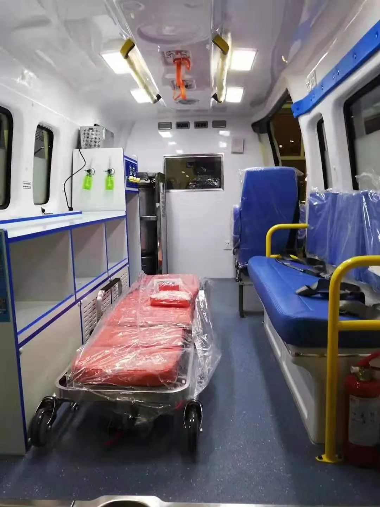
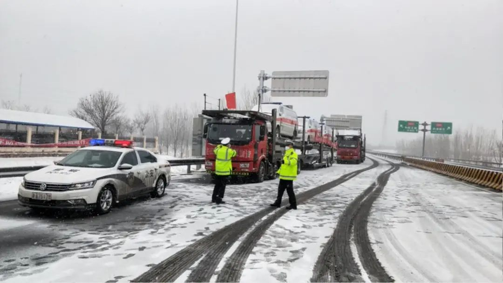
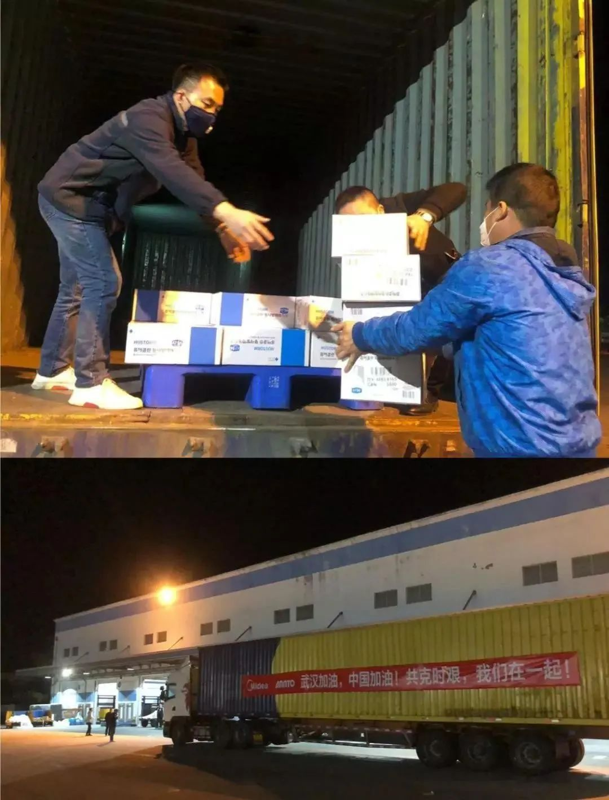

岂曰无衣，与子同裳，“日本诗词大会”背后的中国人
原文链接 备份链接 *************▲*************贴着“岂曰无衣，与子同裳”的物资送达武汉当地医院。（日本湖北商会供图/图） 全文共3277字，阅读大约需要8分钟。 外交部发言人华春莹在例行记者会上说，病毒无情 …

面对战“疫”，一个人的力量或许有限
但一群人的力量，却足以越过寒冬
2月16号，张春田将一批负压救护车运抵武汉。此前，受疫情影响，高速公路服务区暂停餐饮服务，他和司机兄弟们只能靠泡面、干粮果腹。
“我肯定得去，你们谁也拦不住我。”成为美的运输车队志愿者之前，家人对他前往疫区强烈反对。但张春田知道，这批负压救护车是救命的东西。

区别于普通救护车，负压救护车最大的特点就是能使外界与车内环境免受污染，最大限度减少车内医护人员以及车外人员的交叉感染风险，主要用于重大传染病员的安全隔离与转运。

1月24日，湖北13市封城，全省医疗物资面临巨大缺口。在疫情处于爬坡的关键阶段，整个社会的应急储备迎来大考。一群“逆行者”正在通过自身力量，努力钻木生火，用温暖的光照亮那片土地。
15天加速生产，2000公里爱心接力
1月26日，美的集团抗“疫”物资采购组接到一份特殊的任务，采购140辆负压救护车捐献给湖北疫区。
这对于并非经营汽车的美的而言，难度不言而喻。就在当天，一个包含美的集团高层、财务、法务、税务等在内的“战疫突击队”迅速组建。
36个小时内打了上百通电话，最终在1月28日早上锁定12家车企。但由于负压救护车需要定制化生产，车企普遍交付时间都在3月份。
“早一分钟到达，就能早一分钟救人”，美的团队展开与车企锲而不舍的沟通，最终在工信部等政府部门的大力支持下，将首批交付时间敲定在2月10日。

1月29日晚，第一批订单签妥。虽然正值春节假期，但从1月28日洽谈需求再到向车企火速付款、确认订单，仅用了24小时。
订单确认，但新一轮的阻碍似乎刚刚开始。疫情期间，工厂面临负压设备等核心部件紧缺和缺少工人两大难题。面对“近乎不可能的任务”，一场通力协作的接力赛随之打响。
美的随即请求工信部支持，指定供应商提供组装负压救护车所需底盘等配件，并调配负压隔离系统、负压隔离舱等设备，联动各方帮助车企同步解决，压缩生产时间。
在华晨雷诺位于沈阳的工厂内，自发放弃休假的工人们冒着零下15度的严寒，在户外停车场调车、运车，以尽快把车辆运送到车间内进行改造。在各方努力下，最终将30天的改造工期压缩到15天以内。

经过努力，在沈阳生产的第5批40辆负压救护车赶制完成，但要穿越2000公里抵达湖北，无疑给这批预定16日交付带来巨大挑战。辽宁长久运输接过了这支接力棒，而负责这批车辆运输的13名司机，全部由志愿者组成，张春田就是其中的一员。
“路很滑，货车不能随便变道，交警就在前面疏通其它车辆。”张春田回忆。
彼时，一场大范围风雪侵袭我国南北方，运输队正途经天津，大雪致使高速封闭，寸步难行。美的立即联系工信部和包括湖北交通厅在内的各地交通厅寻求支援。1小时后，天津高速公路交警大队赶到，将车队护送至河北。

随后，河北、河南、湖北交警继续接力，直至车队安全抵达武汉。天津、河南的交警还为司机们准备了热腾腾的饭菜，这让在途中不得不用泡面充饥的张春田感动。
面对交警的致敬，张春田有些不好意思，“因为咱们是司机，往这边送些物资和正常工作是一样的，只是去的地方不同了。听他说完，感觉像是做了好人好事似的。”
目前，最后一批从无锡出发的18台负压救护车，已于2月20日凌晨4时许到达武汉大花岭火车站。至此，美的采购捐赠的140辆负压救护车已全部到位，投入战“疫”一线。

而在湖北省内，另一场接力赛仍在上演。
挨过寒冷冬夜，一脚油门继续向前
“我不累，他们才是最危险，最累的人啊，战胜疫情还得靠他们，我只是做一点力所能及的事情。”桑师傅看着坐在医院走廊里打盹的医生和护士，很是心疼。此时，他刚刚把一批物资送到鄂州雷神山医院。
1月26日晚，在距离武汉400公里的湖北随州，桑师傅接到一个电话，问他是否愿意参与武汉救援物资的配送，他毫不犹豫地答应了。
彼时，是武汉封城的第三天，在武汉有完备仓储物流系统的美的集团，捐赠大批物资到火神山、雷神山及湖北各县市医院。而承担救援物资点对点派送任务的是美的旗下安得智联物流公司，桑师傅是其中的一位司机。
1月27日，从随州赶到武汉的桑师傅准时出现在了公司仓库门口，此时的他没有想到，平时再熟悉不过的工作，正面临重重挑战。
早上7点，桑师傅开工，将一批物资送到鄂州雷神山医院。但连续阴雨天气，让前往鄂州的路变得十分泥泞，货车时刻面临陷入泥淖的风险。一旦陷入，就需要调配工地上的挖掘机帮忙推车，桑师傅也总是弄得手脚都是泥。

每天送完最后一单，通常都是深夜。考虑到自己经常进出医院，桑师傅并不敢回家，担心给身边的人造成交叉感染的他，就在车里准备一条棉被，每晚就在车里休息，一睁眼，便继续投入工作。
挨过每个寒冷冬夜的桑师傅，也会时常想念为他日夜担忧的家人，但他选择在封城后的武汉开车前行，是因为有更多想保护的人。

在安得智联像桑师傅这样的司机师傅还有很多，他们将跑完湖北70多家定点医院，将救援物资亲手派送到医生手中。

“逆行者”一路同行
疫情当前，无人能置身事外。驰援武汉，驰援湖北，在唤起了中国企业的社会责任感的同时，也让企业集体面临一次责任大考。
有人说，这是自2008年汶川地震后的第二次大考。不一样的是，12年后，中国企业履责已经提升到了新的阶段，全社会对公益评价也更为理性。人们意识到，捐款数额并不是唯一重要的事情，而企业如何基于疫区需求发挥自己优势资源和专业能力，实现救援效果最大化，才是被定义为最好的援助。

值得一提的是，此次疫情处于春节特殊节点，加上封城、居家隔离等举措，给企业增加了援助难度，但拥有强大调配资源的企业便有了快速行动的能力。一直以来，全球化被定义为美的链接未来的主航道，现如今，美的集团43%的经营收入来自于海外市场，这些经年累积的海外资源，为此次前线物资的“拾遗补缺”提供有力基础。

面对湖北前线物资缺口，美的在第一时间利用全球产品、渠道、资源、团队优势，用“美的速度”为前线及时送上最有用的帮助：1月24日开始，向武汉火神山医院、雷神山医院捐赠所需家电产品，26日，首批产品运抵火神山医院建设现场，并向湖北疫区捐赠1亿元人民币，用于抗“疫”物资全球采购，一周内全球“海淘”到300万只医用口罩、近4万双一次性医用手套，首批52.5万只韩国医用口罩于1月31日抵达武汉……
于任何企业而言，社会责任路线都会随着企业自身定位和外界对其角色的认知变化而不断调整。对于营收在2600亿元以上的美的而言，持续调整和创新产品与业务，是企业发展的一种常态，这种思路亦被融于公益之中。就像美的用捐赠负压救护车，这么“一件不擅长的事”证明，他们在履行社会责任的过程中是专业的，高效的，创新的。
这源于美的多年来的履责经验。和很多伟大的企业将社会责任融入企业战略一样，美的也一直在探索构建可持续的社会责任发展体系。过去20年，美的创始人何享健和美的集团在扶贫、救灾、养老、教育等慈善领域投入超过70亿元，发起和践行多个社会责任项目，不仅帮助到需要帮助的人，也锻炼了自身“作战”能力。
美的深知，面对战“疫”，一个人的力量或许有限，但一群人的力量，却足以越过寒冬。在救援中，美的联动政府、相关车企、物流系统等多方，争分夺秒保证每个环节不掉链子，不仅体现了中国民企的责任担当，也充分展现了发展壮大起来的中国民企的行动力和号召力。
不断变化的外部环境，给所有企业带来如何打破自我习惯的压力。50余年来，领导力、应变力、快速行动力成为了美的不断寻求变革的关键。在这次战“疫”中，美的秉持这种理念，作为“逆行者”中的一员冲在最前方。
这一路上，也因为有了更多同行者，让我们离那个心之向往的目标更进一步。
本文仅代表作者观点，不代表本刊立场
原文链接 备份链接 *************▲*************贴着“岂曰无衣，与子同裳”的物资送达武汉当地医院。（日本湖北商会供图/图） 全文共3277字，阅读大约需要8分钟。 外交部发言人华春莹在例行记者会上说，病毒无情 …
原文链接 备份链接 非常时期，武汉成了全国人民挂念、祈福的城市。封城后，武汉人民的真实生活是什么样？ 正和岛自1月26日起特别推出《叶青：我在武汉疫区的第N天》专栏。叶青是一位定居武汉40年的市民，也是一名学者和官员。接下来的一段时间，他 …
原文链接 备份链接 作者：王路 郭儒逸 来源：*商业人物*（ID：*biz-leaders）* 点火、踩离合、挂档、松手刹、给油…… 货车启动之后，那群无名之辈就知道自己已经成了亡命徒。 他们身上背负太多的人命，有自己的，有家人的，有同事 …
原文链接 备份链接 今天是武汉封城的第十天，也是二月份的第一天。 今天也仍旧是完全宅在家里的一天。武汉天气不算晴好，太阳偶尔露一脸，但因为闭门不出，所以也没觉得寒冷。所以那个终极问题：如果温度合适，食物充足，网速流畅，你究竟可以在家宅几 …
原文链接 备份链接 医疗防护资源不足是常态，各地资源调配需平衡，“灯下黑”区域渐次光亮，但少数地区的疫情宣传依旧不到位 外地务工返乡者最担忧的问题是年后经济收入断流、地域歧视，担心节后可能无法返工 本文首发于南方人物周刊 文 | 本刊记 …